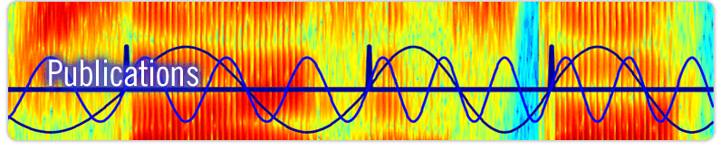

|
|
|
|||||||
|  |
| Peer-Reviewed Articles |
|
<<<<<<< Updated upstream
Rimmele, J. M., Poeppel, D. and Ghitza, O. (2021). "Acoustically Driven Cortical Delta Oscillations Underpin Prosodic Chunking." eNeuro. 8 (4) ENEURO.0562-20.2021; https://doi.org/10.1523/ENEURO.0562-20.2021 Lewis G, van Rijn P, Gwilliams L, Larrouy-Maestri P, Poeppel D, Ghitza O (2021). "NyU-BU contextually constrained sentences Corpus: NUBUC" Zenodo Data Repository. https://zenodo.org/record/4075183#.YKVMoi0RrmF Ghitza, O. (2020). "Acoustic-driven oscillators as cortical pacemaker" Language, Cognition and Neuroscience. https://doi.org/10.1080/23273798.2020.1737720 Sun, Y., Michalareas, G., Ghitza O. and Poeppel, D. (2025). "Complex Impact of Stimulus Envelope on Motor Synchronization to Sound." Journal of Neuroscience. 45(25), https://doi.org/10.1523/JNEUROSCI.1488-24.2025 Rimmele, J. M., Sun, Y., Michalareas, G., Ghitza O., and Poeppel, D. (2023). "Dynamics of functional networks for syllable and word-level processing." Neurobiology of Language. 4(1), 120-144. https://doi.org/10.1162/nol_a_00089 Rimmele, J. M., Poeppel, D. and Ghitza, O. (2021). "Acoustically Driven Cortical Delta Oscillations Underpin Prosodic Chunking." eNeuro. 8 (4) ENEURO.0562-20.2021; https://doi.org/10.1523/ENEURO.0562-20.2021 Lewis G, van Rijn P, Gwilliams L, Larrouy-Maestri P, Poeppel D, Ghitza O (2021). "NyU-BU contextually constrained sentences Corpus: NUBUC" Zenodo Data Repository. https://zenodo.org/record/4075183#.YKVMoi0RrmF Ghitza, O. (2020). "Acoustic-driven oscillators as cortical pacemaker" Language, Cognition and Neuroscience. 35(9), 1100-1105. https://doi.org/10.1080/23273798.2020.1737720 Penn, L. R., Ayasse, N. D., Wingfield, A. and Ghitza, O. (2018). "The possible role of brain rhythms in perceiving fast speech: Evidence from adult aging." J. Acoust. Soc. Am. 144 (4) 2088--2094, https://doi.org/10.1121/1.5054905 Bosker, H. R. and Ghitza, O. (2018). "Entrained theta oscillations guide perception of subsequent speech: behavioural evidence from rate normalisation." Language, Cognition and Neuroscience, https://doi.org/10.1080/23273798.2018.1439179 Ghitza, O. (2016). "Acoustic-driven delta rhythms as prosodic markers" Language, Cognition and Neuroscience. http://dx.doi.org/10.1080/23273798.2016.1232419 Farbood, M. F., Rowland, J., Marcus, G., Ghitza, O. and Poeppel, D. (2014). "Decoding time for the identification of musical key." Atten Percept Psychophys. doi: 10.3758/s13414-014-0806-0 Ghitza, O. (2014). "Behavioral evidence for the role of cortical theta oscillations in determining auditory channel capacity for speech." Front. Psychol. 5:652. doi:10.3389/fpsyg.2014.00652 Jepsen, M. L., Dau, T. and Ghitza, O. (2014). "Refining a model of hearing impairment using speech psychophysics." J. Acoust. Soc. Am., 135 (4), EL179, http://dx.doi.org/10.1121/1.4869256 Doelling, K. B., Arnal, L. H., Ghitza, O. and Poeppel, D. (2014). "Acoustic landmarks drive delta-theta oscillations to enable speech comprehension by facilitating perceptual parsing." NeuroImage. 85:761. doi: 10.1016/j.neuroimage.2013.06.035 Ghitza, O. (2013). "The theta-syllable: a unit of speech information defined by cortical function." Front. Psychol. 4:138. doi: 10.3389/fpsyg.2013.00138 Ghitza, O., Giraud, A. and Poeppel, D. (2013). "Neuronal oscillations and speech perception: critical-band temporal envelopes are the essence." Front. Hum. Neurosci. 6:340. doi: 10.3389/fnhum.2012.00340 Ghitza, O. (2012). "On the role of theta-driven syllabic parsing in decoding speech: intelligibility of speech with a manipulated modulation spectrum." Front. Psychol. 3:238. doi:10.3389/fpsyg.2012.00238 Ghitza, O. (2011). "Linking speech perception and neurophysiology: speech decoding guided by cascaded oscillators locked to the input rhythm." Front. Psychol. 2:130. doi: 10.3389/fpsyg.2011.00130 Ghitza, O. and Greenberg, S. (2009). "On the possible role of brain rhythms in speech perception: Intelligibility of time compressed speech with periodic and aperiodic insertions of silence." Phonetica 66:113–126. doi:10.1159/000208934 Shamir, M., Ghitza, O., Epstein, S. and Kopell, N. (2009). "Representation of time-varying stimuli by a network exhibiting oscillations on a faster time scale." PLoS Comput Biol 5(5). doi:10.1371/journal.pcbi.1000370 Messing, D. P., Delhorne, L., Bruckert, E., Braida, L. D. and Ghitza, O. (2009). "A non-linear efferent-inspired model of the auditory system; matching human confusions in stationary noise." Speech Communication 51:668-683. doi:10.1016/j.specom.2009.02.002 Rix, A. W., Beerends, J. G., Kim, D.-S., Kroon, P. and Ghitza, O. (2006). “Objective Assessment of Speech and Audio Quality – Technology and Applications,” IEEE Trans. Audio, Speech and Language Proc., SAP-14(6), 1890-1901 Ghitza, O. (2001). “On the upper cutoff frequency of the auditory critical-band envelope detectors in the context of speech perception.” J. Acoust. Soc. Am., 110(3), 1628-1640 Ghitza, O. and Sondhi, M. M. (1997). “On the perceptual distance between speech segments.” J. Acoust. Soc. Am., 101(1), 522-529 Ghitza, O. (1994). “Auditory models and human performance in tasks related to speech coding and speech recognition.” IEEE Trans. on Speech and Audio, SAP-2(1). Special issue on Neural networks for Speech Processing, 115-132 (Invited) Ghitza, O. (1993c). “Processing of spoken CVCs in the auditory periphery: I. Psychophysics,” J. Acoust. Soc. Am., 94(5), 2507-2516 Ghitza, O. (1993b). “Adequacy of auditory models to predict internal human representation of speech sounds.” J. Acoust. Soc. Am., 93(4), 2160-2171 Ghitza, O. and Sondhi, M. M. (1993a). “Hidden Markov Models with Templates as Nonstationary States: An Application to Speech Recognition.” Computer Speech and Language, 7(2), 101-119 Ghitza, O. (1988). “Temporal non-place information in the auditory nerve firing patterns as a front-end for speech recognition in a noisy environment.” Journal of Phonetics, 16(1), 109-124. Theme issue on the “Representation of speech in the auditory periphery” (Invited) Ghitza, O. (1986). “Auditory nerve representation as a front-end for speech recognition in a noisy environment.” Computer Speech and Language, 1(2), 109-131 |
| Most Significant Non Peer-Reviewed Publications |
Lee, C-Y, Glass, J. and Ghitza, O. (2011). “An efferent-inspired auditory model front-end for speech recognition.” Interspeech 2011, 49-52, Florence, Italy, August [ PDF File ] Jepsen, M. L., Dau, T. and Ghitza, O. (2009). “Modeling a damaged cochlea: beyond non-speech psychophysics.” International Symposium on Auditory and Audiological Research, Copenhagen, Denmark, August [ PDF File ] Ghitza, O. (2007). “Using auditory feedback and rhythmicity for diphone discrimination of degraded speech.” Proceed. Intern. Conf. on Phonetics, ICPhS XVI, 163-168, Saarbrücken, Germany, August [ PDF File ] Ghitza, O. (2004). “On the possible role of MOC efferents in speech reception in noise.” J. Acoust. Soc. Am., 115(5), A., 2500 [ PDF File ] Ghitza, O. and Kroon, P. (2000). “Dichotic presentation of interleaving critical-band envelopes: An application to multi-descriptive coding.” in Proc. IEEE Speech Coding Workshop, 72-74, Delavan, Wisconsin, September [ PDF File ] Ghitza, O. and Sondhi, M. M. (1999). “Perceptually motivated measures for automatic speech recognition.” in Proc. Robust Methods for Speech Recognition in Adverse Condition, Tampere, Finland, May [ PDF File ] Kim, D. S., Ghitza, O. and Kroon, P. (1999). “A computational model for MOS prediction.” in Proc. IEEE Speech Coding Workshop, Provoo, Finland, June [ PDF File ] Sandhu, S., Ghitza, O. and Lee C-H. (1995). “A comparative study of MEL Cepstra and EIH for phone classification under adverse conditions.” International Conference on Acoustics, Speech and Signal Processing – ICASSP '95, 409-412, Detroit, May [ PDF File ] Ghitza, O. (1988). “Auditory neural feedback as a basis for speech processing.” International Conference on Acoustics, Speech and Signal Processing – ICASSP '88, 91-94, New York, April [ PDF File ] Ghitza, O. (1987). "Robustness agaist noise: The role of timing-syncrony measurement.” International Conference on Acoustics, Speech and Signal Processing – ICASSP '87, Dallas, April [ PDF File ] Ghitza, O. (1986). “Speech analysis/synthesis based on matching the synthesized and the original auditory nerve representation.” International Conference on Acoustics, Speech and Signal Processing – ICASSP '86, 2372-2375, Japan, April [ PDF File ] Ghitza, "A measure of in-synchrony regions in the auditory nerve firing patterns as a basis for speech vocoding." International Conference on Acoustics, Speech and Signal Processing – ICASSP '85, 505-508, Tampa, March. [ PDF File ] |
Book Chapters |
| Ghitza, O. and Greenberg, S. (2010). "Intelligibility of time-compressed speech with periodic and aperiodic insertions of silence: evidence for endogenous brain rhythms in speech perception?" In: The Neurophysiological Bases of Auditory Perception (Eds.) E. A. Lopez-Poveda, A. R. Palmer, R. Meddis, Springer-Verlag, Berlin Heidelberg, 393-406 Ghitza, O., Messing, D., Delhorne, L., Braida, L., Bruckert, E., and M. M. Sondhi (2007). “Towards predicting consonant confusions of degraded speech.” In: Hearing – from sensory processing to perception (Eds.) B. Kollmeier, G. Klump, V. Hohmann, U. Langemann, M. Mauermann, S. Uppenkamp and J. Verhey, Springer-Verlag, Berlin Heidelberg, 541-550 Ghitza, O. (1994). “Auditory models and human performance in tasks related to speech coding and speech recognition.” In: Modern methods of speech processing (Eds.) R. P. Ramachandran, R. J. Mammone, Kluwer Academic Publishers, 401-448 Ghitza, O. (1992). “Auditory nerve representation as a basis for speech processing.” In: Advances in speech signal processing (Eds.) S. Furui and M. M. Sondhi, Marcel Dekker, New York, 453-485 Ghitza, O. and Goldstein, J. L. (1983). “JNDs for the spectral envelope parameters in natural speech.” In: Hearing – Physiological Bases and Psychophysics (Eds.) R. Klinke and R. Hartmann, Springer-Verlag, Berlin Heidelberg, 352-359. |
bioRxiv |
| Rimmele et al. (2020). "Acoustically driven cortical delta oscillations underpin perceptual chunking." [Submitted]. [ BioRxiv file ] Tavano et al. (2020). "Neural harmonics reflect grammaticality." [Submitted]. [ BioRxiv file ] Rimmele et al. (2019). "Dynamics of functional networks for syllable and word-level processing." [Submitted]. Davidesco et al. (2018). "Electrocorticographic responses to time-compressed speech vary across the cortical auditory hierarchy." [ BioRxiv file ] |